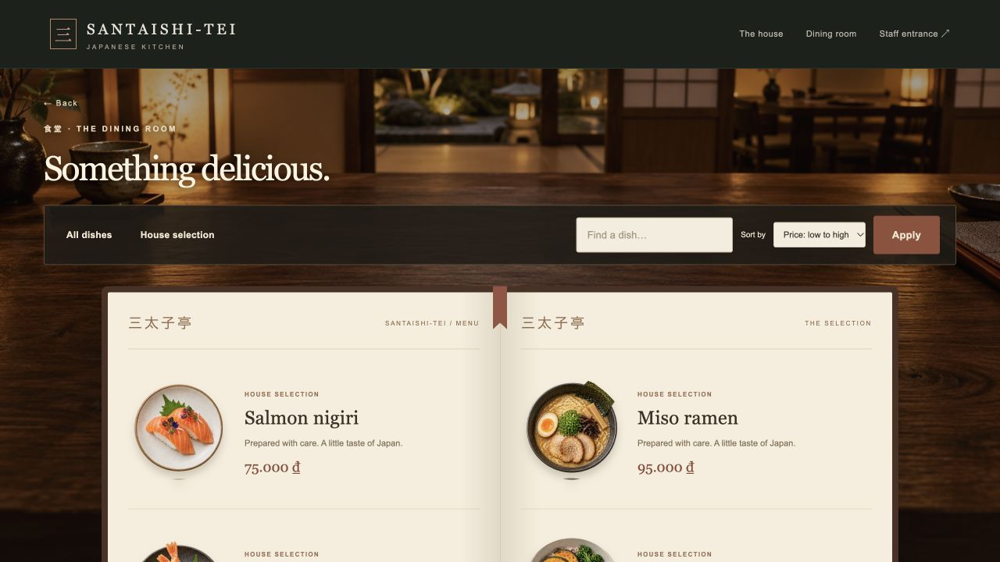
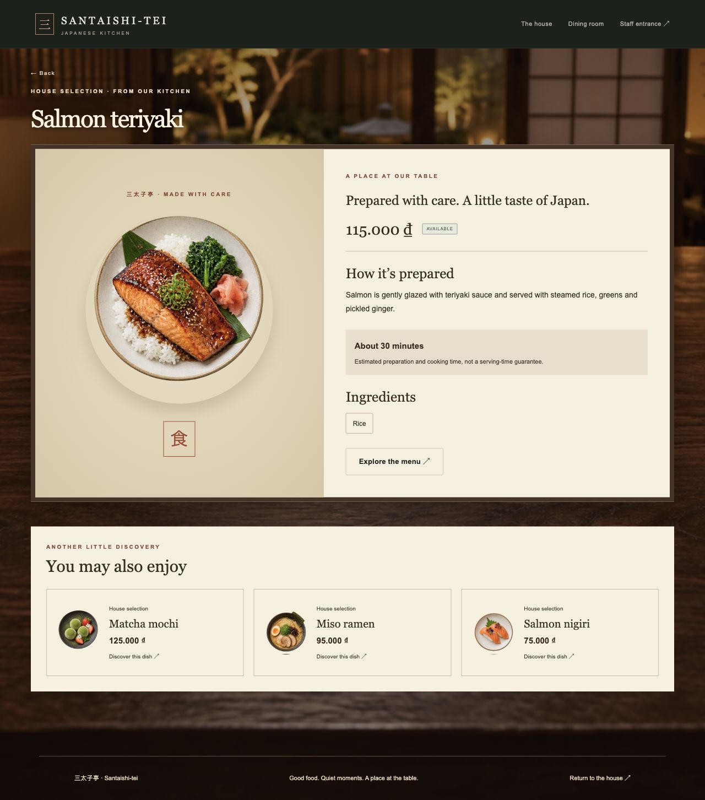
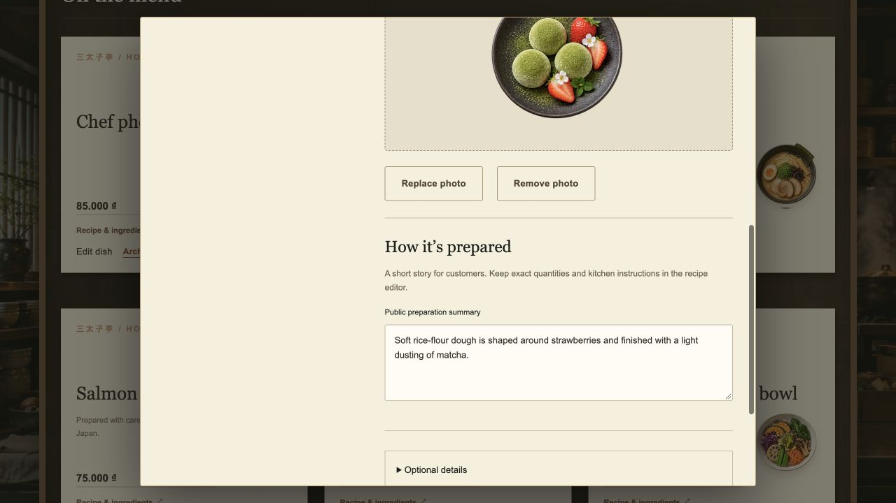
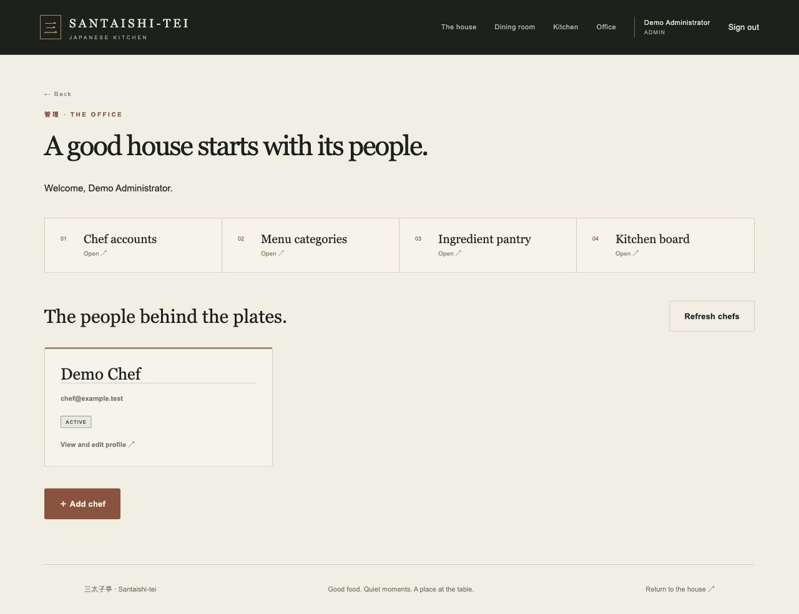
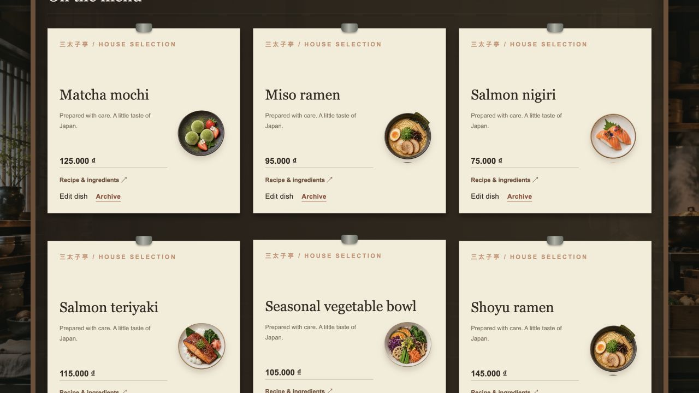

三太子亭
Santaishi-tei
A restaurant experience, rebuilt with React
Block 6 · CSR & REST API
Tam Thái Tử
The final product
Three audiences, one restaurant
- Customers
- Explore the restaurant and browse the menu.
- Chefs
- Maintain dishes, recipes, usage and waste.
- Administrators
- Manage ingredients, stock receipts, corrections and staff.
Scope: introduction and management. No customer accounts, ordering or table booking.
The customer experience


Page-flip pagination · sorting · dish popup · ingredients · public preparation story · related dishes
The staff experience


Select a photo → save a draft → publish when ready. Dish URLs are generated automatically.
Our development process
- 01 · Keep the foundationExisting schema, business rules and Japanese visual identity.
- 02 · Establish the APIResource routes, response handlers, validation and authorization.
- 03 · Build React viewsReact Router, shared HTTP client and page-specific data loading.
- 04 · Refine through feedbackPersistent dining room, recipe popup, office and dropdown fixes.
- 05 · Complete content workflowsRepeatable demo data, public summaries, photos and publication.
- 06 · Verify the behaviorIsolated API tests, browser checks and a temporary Storage test.
SSR and CSR request cycles
Block 5 · Server-rendered views
Block 6 · React-rendered views
React Router changes internal URLs through the History API. API writes use real PATCH, PUT and DELETE methods.
Technical architecture
Views and navigation
Headers, CSRF, errors
Routes and middleware
Request / response
Rules and persistence
PostgreSQL access
The database stores an image URL. Existing local assets remain supported.
JavaScript throughout. MVC responsibilities remain: React views, Express controllers, and services/models backed by Prisma.
Workflow: save a dish
- Chef selects Save draft or PublishLock repeat submissions and show progress.
- Upload a newly selected photo, if anyPOST /api/dish-photos → validate → resize → Storage → public URL.
- Send dish fields through the shared clientPOST for creation; PATCH for edits. Include the photo URL.
- Authorize and validate on the serverSession → role → CSRF → permitted fields → business rules.
- Persist with Prisma and return the saved record{ ok: true, data: … } → close editor → refresh the board.
On failure: retain the form and show a useful error. A failed board refresh offers retry without repeating the save.
REST API contract
| Method | Resource | Purpose |
|---|---|---|
| GET | /api/menu | Read published dishes |
| POST | /api/dishes | Create a dish |
| PATCH | /api/dishes/:id | Change supplied fields |
| PUT | /api/dishes/:id/recipe | Replace recipe |
| DELETE | /api/dishes/:id | Archive dish |
| POST | /api/stock-operations | Record stock change |
Managed response envelopes
{
"ok": true,
"data": { "name": "Matcha mochi" }
}
{
"ok": false,
"error": {
"code": "VALIDATION_ERROR",
"message": "Check the input.",
"fields": { "name": "Required" }
}
}Illustrative payload excerpts. The frontend branches on code, not message.JSON writes: application/json. Photo uploads: multipart/form-data with a browser-generated boundary.
Errors, loading and recovery
Three layers checked centrally
- Network: offline, timeout or connection failure.
- HTTP: unsuccessful status such as 401, 403 or 500.
- Application: HTTP 200 with ok: false.
| Status | Meaning in this exercise |
|---|---|
| 200 | Success or expected business failure |
| 401 / 403 | Unauthenticated / forbidden |
| 500 | Unexpected server failure |
| 404 | Unknown API route |

Each page loads its own content. Loading feedback and interaction locks prevent repeated actions.
Data relationships and permissions
Category 1 → many Dish
Dish 1 → 0..1 Recipe
Recipe 1 → many RecipeItem many → 1 Ingredient
StaffUser 1 → many StockOperation
StockOperation 1 → many StockMovement many → 1 Ingredient
Staff also edit recipes. Operations can reference a recipe. Sessions store login state and expiration separately.
| Capability | Public | Chef | Admin |
|---|---|---|---|
| Published menu | ✓ | ✓ | ✓ |
| Dishes / recipes | — | ✓ | ✓ |
| Usage / waste | — | ✓ | ✓ |
| Ingredients / categories | — | Read | Manage |
| Receipts / corrections | — | — | ✓ |
| Staff management | — | — | ✓ |
Decimal stock quantities · immutable movement history · transaction-safe changes · request-key idempotency
Decision log
| Decision | Reason / result |
|---|---|
| Keep static restaurant introduction in code | No unnecessary settings or content tables. |
| Reuse schema; add public preparation summary | Preserve data while separating public copy from private recipe instructions. |
| Retain room while changing menu page | Avoid a blank screen; preserve the book interaction. |
| Edit dishes inside a recipe popup | Maintain board context and lifting / returning animation. |
| Local images + Supabase Storage | Keep existing assets; let staff upload new photos without code changes. |
| Automatic, stable slugs | Remove a technical input; preserve links when names change. |
| Explicit draft / publish controls | Make public visibility clear to chefs. |
| Repeatable demo seeding and archives | Preserve existing data and references during demonstrations. |
Verification and live demonstration
38 automated tests passed
Last completed implementation verification: 19 October 2026.
- API envelopes, permissions and CSRF.
- Stock transactions and repeatable demo import.
- Public/private dish data separation.
- Photo validation, slugs and publication.
Browser workflow and temporary live Storage upload also verified. The test photo was removed.
Suggested demo · 3 minutes
- Browse and sort the dining menu.
- Open a dish and its full details.
- Sign in as chef; create a draft with a photo.
- Publish it and show it on the board.
- Show pantry and stock journal.
- Switch to admin and show chef management.
Use a designated demo record. If connectivity fails, use the screenshots on slides 3 and 4.
What we delivered
A complete CSR restaurant workflow
React views · Express REST API · Prisma ORM · Supabase
The Japanese experience remains, with clearer staff controls and consistent API behavior.
Current boundaries
No ordering or bookings.
Internal recipe details remain staff-only.
Uploads and database writes are separate.
Next improvements
Reviewed cleanup of unused photos.
Broader browser regression tests.
Deployment configuration and monitoring.